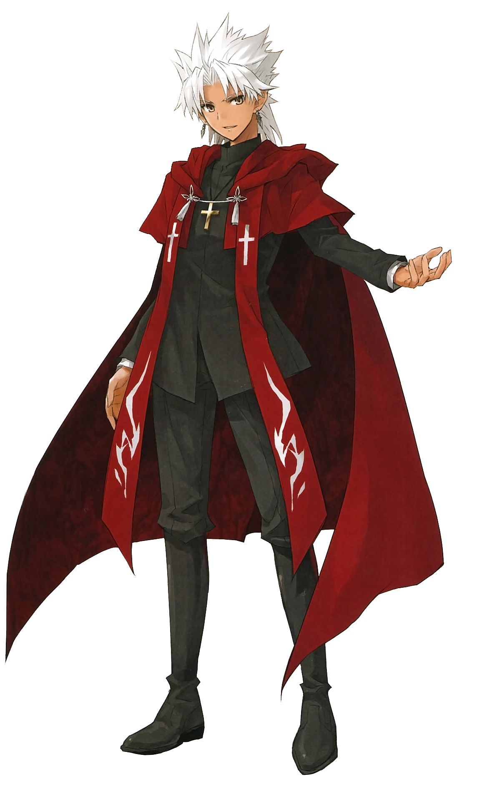

Verdadeiro nome: Shirou Tokisada Amakusa
Breve Verdadeiro Mito
O verdadeiro nome de Ruler e a verdadeira identidade de Shirou Kotomine é Shirou Tokisada Amakusa, O líder adolescente da Shimabara Rebellion. Nascido no período Edo, ele era um menino de milagres que quase poderia ser chamado de santo. No entanto, como exatamente ele foi descoberto e, de fato, pelo menos uma boa metade de sua vida está envolta em mistério. Aquele que se concentrou em seus estudos desde a infância começou a realizar muitos milagres na fronteira por um tempo. Tendo curado feridas e andado sobre as águas, ele finalmente começou a ser adorado entusiasticamente como filho de Deus pelos camponeses que acreditavam em uma religião proibida. Na realidade, ele era apenas um Feiticeiro. Ele não foi ensinado Magecraft, mas era algo que vinha a ele naturalmente, mas muito raramente. Seu uso de Magecraft era principalmente subconsciente, então ele nem tinha percebido isso. Aconteceu que ele nasceu com o poder de exercer os milagres chamados Magecraft, e ninguém ao seu redor o apontou, e por isso ele foi reverenciado como um menino de milagres. Talvez Mori Souiken e seus colegas tenham suprimido esses sussurros.
A rebelião de Shimabara
Os governantes da terra, o clã Matsukura, aumentaram drasticamente os impostos, causando fome e sobrecarga ao povo. Essa ação forçou os fracos a cair em desespero, pois não conseguiram resistir. À medida que continuavam a ser explorados, o povo encontrou a salvação no cristianismo, as palavras cheias de amor que não podiam ser derrotadas pela fome, pobreza ou desespero. No entanto, o clã Matsukura tentou tirar isso deles. Para eles não era mais exploração, mas assassinato. As pessoas foram provocadas e se levantaram e se revoltaram. Eles temiam ter seu direito de viver tirado, então superaram o medo de morrer em batalha.
Entre eles estava Shirou, um menino na época. Ninguém sabia se sua presença era uma coincidência ou a vontade de Deus, mas antes que alguém percebesse, Shirou os liderava, embora sob a instrução de vários Rōnin. Em pouco tempo, ex-vassalos de Konishi YukinagaWP o tinham como líder e estabeleceram um exército rebelde contra o Edo Shogunate. Juntamente com os camponeses de Shimabara, que sofriam com o ambiente hostil da época, eles levantaram uma insurreição em grande escala. A batalha deles não deve ter derrota nem vitória. Porque ao se levantarem, eles foram perdedores e vencedores ao mesmo tempo. Tudo o que restava era o poder de se levantar, mas o ato de se levantar era um ato necessário. Eles se levantaram por causa do que eles acreditavam – isso em si era importante e o que eles desejavam. Eles acreditavam que os sacrifícios seriam reduzidos ao mínimo e, mesmo que várias pessoas, incluindo eles mesmos, se tornassem sacrifícios, o mundo não morreria, mas renasceria.
Shirou trouxe um milagre, a possibilidade de vitória que deveria ter sido impossível. Em suas próprias palavras, ele recebeu poder milagroso concedido por Deus porque Deus ocasionalmente exercerá malícia devido à boa vontade. Infelizmente, Shirou alcançou a vitória. Todos foram à loucura e ficaram empolgados com a vitória. Eles se agarraram a Shirou, que havia vencido uma batalha onde a vitória deveria ter sido impossível, como um filho de milagres. Essa pureza tola deles perturbou o menino. Shirou acreditava que eles não deveriam ter vencido. Vencer não era uma opção. Ele foi pego em salvar vidas em um futuro próximo e desviou os olhos do quadro maior. Eles podem morder um gato encurralado – mas depois de ser mordido, o gato enfurecido retaliaria matando-os.
Morte
Apesar de levar a revolta levemente no início, o Edo Shogunate ficou sério devido a suas forças punitivas serem derrotadas e enviaram o Élder Matsudaira Nobutsuna como o comandante supremo. Shirou liderou a defesa do Hara CastleWP e derrotou o mais forte dos atacantes do xogunato em uma série de ataques defensivos coordenados. Matsudaira Nobutsuna trouxe táticas de fome para o exército revoltado que havia se trancado no castelo de Hara e estimou o tempo em que eles estavam ficando sem comida e munição para iniciar sua ofensiva geral. Foi dito que 37.000 pessoas, incluindo Shirou, foram massacradas pelas forças do xogunato, com exceção de um único traidor (existem várias teorias sobre isso).
Depois que sua rebelião falhou, Shirou foi condenado à execução por decapitação. Antes de sua morte, Shirou sentiu que era ingênuo e testemunhou uma cena como o inferno quando seus companheiros foram mortos lentamente. As cabeças decapitadas de idosos, homens massacrados como animais experimentais, bebês perfurados por lanças, meninas estupradas em busca de luxúria e depois jogadas fora. Ele estava convencido de que as inúmeras vidas reunidas não foram tiradas pelo inimigo, mas por ele mesmo. Shirou sem mudar de expressão uma vez, aceitou esse resultado com uma vontade de aço e isso o tornou impossível de ceder e desistir. Ele apenas olhou para esta cena de ruína. Ele não revelou nenhuma resignação ou tristeza e até superou a dor de seus braços desmembrados. Ele aceitou que havia perdido, a responsabilidade pela morte de seus companheiros e sua morte inevitável. Mas a única coisa que ele não podia aceitar era que tudo cairia em ruínas depois disso. Ele não podia aceitar. Depois de ter desperdiçado tantas vidas, ele absolutamente não podia aceitar que nada seria ganho como resultado.
" Assim Deus. Me dê outra chance. Da próxima vez, não vou perder de vista o quadro maior. Vou eliminar todos os obstáculos, inimigos e dificuldades no meu caminho. Da próxima vez, obterei todo o bem do mundo. Um mundo onde todos são felizes, todos são bons e todos são perfeitos. Exterminarei todo o mal e criarei um mundo novo e puro. » (Última oração de Shirou Tokisada Amakusa)
Breve Função na Historia
Terceira Guerra do Santo Graal
Diferindo da linha do tempo da Terceira Guerra do Santo Graal de Fate/stay night, onde a família Einzbern convocou o Angra Mainyu da classe Avenger, eles abusam de um dos sistemas instalados no Grande Graal e trouxeram Shirou como um Servo da classe Governante que deveria ser uma autoridade imparcial que regulou o andamento da Guerra. Os Einzberns desejavam invocar um Espírito Heroico adequado à classe Governante, em vez de algum herói oriental sem nome. No entanto, o ato de convocar um Governante já era uma interferência severa no formato operacional normal da Guerra do Santo Graal, então ele era um compromisso com a vantagem de seus Feitiços de Comando.
À medida que a terceira guerra chegava ao fim, os Einzberns estavam claramente mais próximos do que qualquer outro do Grande Graal. Shirou lutou até a morte contra o Servo Darnic Prestone que Yggdmillennia convocou, Fionn mac Cumhaill. Enquanto seu Mestre foi morto em ação, Shirou permaneceu materializado devido a Shirou ter entrado em contato com o Grande Graal e conseguindo receber carne. Enquanto Risei Kotomine resgatou o Mestre dos Tohsaka, Shirou o ajudou com seu trabalho de resgate. Como Darnic roubou com sucesso o Grande Graal, os sobreviventes foram Shirou e Risei. Risei questiona sobre os planos futuros de Shirou, Shirou mentiu para Risei sobre desistir do Grande Graal, mas ele planeja viajar ao redor do mundo.
Risei preparou um registro familiar, registrando-o como seu filho "Shirou Kotomine". Ele se juntou à Igreja graças às conexões de Risei. Ele entrou na Assembléia do Oitavo Sacramento como Kotomine Shirou, mas, naturalmente, Risei não pôde reconhecê-lo como seu filho e se aproximou dele honestamente como amigo. Na época em que o filho de Risei nasceu, Shirou havia diminuído deliberadamente seu contato com Risei. Shirou permaneceu distante do próprio filho de Risei. Shirou conscientemente evita Kirei Kotomine porque Shirou notou a "distorção" dentro de seu meio-irmão. Claro, ele gostaria muito de libertar Kirei de sua angústia, mas não importa como ele pensasse sobre isso, não terminaria bem. Além disso, se a chance de um em um milhão ocorresse em que um evento o fizesse afirmar sua própria distorção, Shirou estava muito preocupado que a primeira pessoa que Kirei teria como alvo fosse ele. Assim, Shirou manteve distância de Kirei tanto quanto possível do início ao fim de seu relacionamento. O funeral de Risei foi a última vez que seu filho Kirei e Shirou se conheceram. Ele às vezes serviu como mediador em algumas das subespécies Holy Grail Wars.[5] Assumindo um cargo na Assembleia do Oitavo Sacramento, restava pouca informação a ser vislumbrada sobre ele por quem a procurasse. Ele quase não tinha interação com os demais membros da Assembleia, e era visto como uma curiosidade por seus compatriotas que se perguntavam: "Há quanto tempo esse cara está aqui?". Ele se escondeu no Oriente Médio por quase vinte anos para procurar catalisadores para Semiramis.
Como a Associação dos Magos decidiu buscar um Mestre da Igreja para que seu envolvimento comprovasse a legitimidade de sua causa. Já tendo hipotetizado a possibilidade de uma Grande Guerra do Santo Graal - uma situação com sete Servos versus sete Servos ocorrendo em vez de uma Guerra do Santo Graal normal. Em uma situação tão anormal com sete Servos contra sete Servos e onde até mesmo o Governante anterior havia convocado seu próprio Servo, o Grande Graal automaticamente convocou a Governante para esta guerra, Jeanne d'Arc, mas Shirou incluiu até isso em seus cálculos como um evento dentro de suas expectativas. Shirou prontamente se juntou à facção vermelha como mediador duplo e mestre enviado pela Santa Igreja. Ele recebeu um catalisador para Semiramis da família Sophia-Ri no momento em que foi decidido que ele participaria da Grande Guerra do Santo Graal, mas parece que ele garantiu três outros catalisadores por conta própria depois de procurar por quase vinte anos como precaução. Ele rapidamente convocou Semiramis sem demora.[5] Ele convocou Assassino de Vermelho como seu Servo, e ela lhe perguntou: "Não é à toa que sou conhecido como o envenenador mais antigo do mundo... Você está realmente certo de que pode empunhar a Rainha Semiramis?" Ele respondeu a ela com: "Ó Rainha da Assíria - nesta Grande Guerra do Santo Graal, eu não aponto para a vitória ou a derrota, mas para outro objetivo. Você me ajudará?" Embora inicialmente preocupada com sua natureza estranha, ela acabou por respeitá-lo muito e decidiu ajudá-lo sem hesitação. Ele se reuniu com cinco dos outros Mestres da Facção Vermelha, e Assassin conseguiu manipulá-los para permitir que ele controlasse seus Servos.
A Grande Guerra do Santo Graal
Shirou é enviado pela Igreja para observar a Guerra do Santo Graal como supervisor e participar como um dos Mestres da Facção Vermelha. Ele assume o controle dos cinco mestres de marionetes, e ele e Assassin são os presentes para a convocação de Archer of Red e Rider of Red. Fingindo agir provisoriamente como mediador para os outros Servos, Rider e Archer desconfiam de seus Mestres não se mostrarem e de sua presença. Caster of Red, ao contrário, passou a chamá-lo de Mestre. Após a chegada de Kairi Sisigou e a convocação de Saber of Red, ele usa um dos familiares de pomba de Assassin para entregar uma mensagem solicitando uma reunião. Ele calmamente se apresenta na chegada deles, mas ambos não confiam nele. Ele pede que Saber seja materializado, e ele fica surpreso quando não consegue dizer sobre a identidade dela com sua habilidade como Governante.
Ele faz com que Assassina se revele e começa a discutir a situação da guerra. Mostrando os parâmetros coletados dos Servos da Facção Negra, ele dá sua especulação sobre a probabilidade de Lancer of Black ser Vlad III. Ele confirma que Lancer of Red e Rider tem força para se opor ao Black Lancer. Embora ele tente fazer com que Kairi revele o nome de Saber, Kairi recusa e decide agir sozinho em vez de com o grupo. Embora um pouco incomodado com a situação, ele concorda em fornecer a Kairi informações sobre os procedimentos da guerra quando os dois saem. Desapontado por sentirem suspeitas e por serem incapazes de ver através do Segredo de Pedigree, Shirou rejeita a ideia de Assassino de enviar um agente atrás deles. Lidar com eles como aliados até a derrota da Facção Negra é do seu interesse, então ele passa para o tópico da conclusão dos Jardins Suspensos da Babilônia em três dias.
Eles são interrompidos momentos depois pela chegada de Caster, cantando uma linha de Richard IIIWP. Quando Shirou não consegue identificar a linha, Caster lamenta exageradamente que não pode acreditar que Shirou não leu uma de suas maiores obras, dando-lhe "As Obras de William Shakespeare". Enquanto a discussão com Assassin o traz de volta à seriedade, ele revela que Berserker of Red começou uma marcha contra o inimigo. Shirou está relativamente calmo em comparação com o choque de Assassin, e imediatamente faz Assassin enviar ordens para Archer persegui-lo na tentativa de detê-lo, embora muito improvável. Ele acha que tentar parar Berserker com Feitiços de Comando só atrasaria o inevitável agora que ele encontrou seu alvo, então ele tem Archer para apoiá-lo.
Shirou deve trabalhar como supervisor para manter o sobrenatural longe dos olhos do público, então ele deve seguir o caminho de Berserker para lidar com os espectadores. Berserker não se desmaterializa, então ele será mantido ocupado durante os dois dias de marcha. Dizendo a Caster para ficar longe de problemas, ele tenta encorajá-lo dizendo-lhe que a próxima guerra irá satisfazer seu amor por histórias. Quando Berserker chega à fortaleza, ele retorna ao outro Mestre e os alimenta com informações falsas sobre a natureza da guerra. Dizendo a eles que a Red Faction tem apenas dois Servos restantes e que os Mestres fugitivos foram capturados, ele os exorta a renunciar ao controle total dos Servos devido a não ser mais necessário para eles. Eles ainda são incapazes de aceitar sua proposta, acreditando ser muito perigoso, então ele se despede deles. Ele volta para Assassin, depois de apostar uma garrafa de vinho em um resultado aceitável, então planeja colocar outras coisas em movimento.
Ele pergunta se o vinho, uma garrafa obtida de um ancião do Oitavo Sacramento, é um prêmio aceitável, mas ela simplesmente o quer pelo "sabor da riqueza". Eles meditam sobre a natureza dos reis, fazendo com que Shirou se divirta, pois lhe parece que seria mais adequado para ele ter sido o Servo e ela a Mestra. Quando ela pergunta brincando se ele gostaria de trocar de lugar, ele recusa ao notar sua natureza como um déspota na vida, e eles repetem suas palavras de sua convocação. Ela menciona que suas palavras na época eram estranhas o suficiente para querer que ela procurasse uma pessoa para se tornar seu mestre, mas depois ficou muito interessada. Eles recebem aviso de que Berserker quase chegou, observando que Rider também se juntou a eles. Eles também recebem aviso da chegada de Ruler, de quem Shirou é mais cauteloso. Embora não a odeie, ele sente que ela é aquela cuja existência deve ser esmagada, então ele despacha Lancer of Red para matá-la depois de decidir que Rider não aceitaria de bom grado a tarefa.